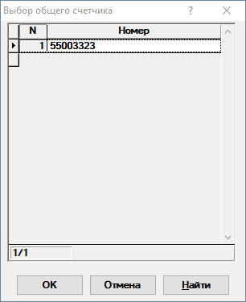
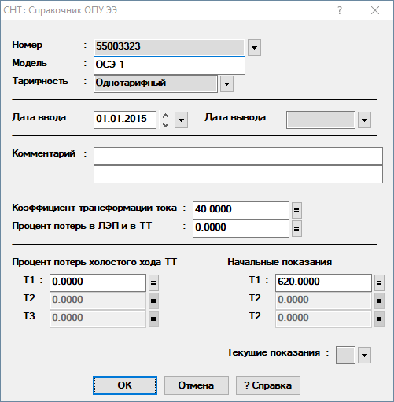
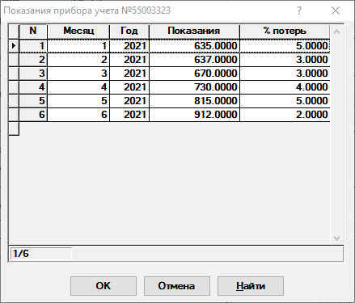

Справочник общих приборов учета
В данном справочнике содержатся данные об общих приборах учета(ОПУ).
При открытии отображается список ОПУ, в котором можно добавлять, удалять ОПУ и редактировать их номера (рис. 1).

Рис. 1. Список ОПУПосле выбора ОПУ отобразится заполненный диалог редактирования данных(рис. 2). Для сохранения внесённых данных необходимо нажать на кнопку ОК.

Рис. 2. Редактирование ОПУДля выбора нового ОПУ необходимо снова нажать на
 справа
от графы Номер. При этом, если внесённые изменения не были сохранены нажатием
на кнопку ОК, будет предложено сохранить их перед редактированием
нового ОПУ.
справа
от графы Номер. При этом, если внесённые изменения не были сохранены нажатием
на кнопку ОК, будет предложено сохранить их перед редактированием
нового ОПУ.
Рассмотрим поля, доступные для заполнения:
-
Номер - номер ОПУ.
-
Модель - модель ОПУ.
-
Тарифность - указывается количество тарифных зон у ОПУ.
-
Дата ввода - дата ввода ОПУ в эксплуатацию. По умолчанию подставляется минимальная дата.
-
Дата вывода - дата вывода ОПУ из эксплуатации. Если дата вывода из эксплуатации не известна, то значение в этом поле менять не надо.
-
Комментарий - комментарий к ОПУ.
-
Коэффициент трансформации тока - коэффициент трансформации трансформатора тока.
-
Процент потерь в ЛЭП и в ТТ - процент потерь в высоковольтных линиях электропередачи и в трансформаторе тока.
-
Потери холостого хода ТТ (Т1, Т2, Т3) - потери холостого хода трансформатора тока. Доступность полей зависит от тарифности ОПУ.
-
Начальные показание (Т1, Т2, Т3) - начальные показания по тарифным зонам. Доступность полей зависит от тарифности ОПУ.
-
Текущие показания - открывается редактор показаний ОПУ(рис. 3).

Рис. 3. Редактор показаний ОПУ